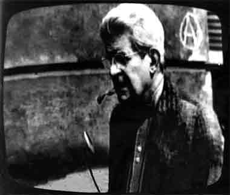

Three random and decontextualized quotes from the Master of obscure Discourse, Jacques Lacan
-
As is known, it is in the realm of experience inaugurated by psychoanalysis that we may grasp along what imaginary lines the human organism, in the most intimate recesses of its being, manifests its capture in a symbolic dimension.
-
The Other is the locus in which is constituted the I who speaks along with he who hears, what is said by the one being already the reply, the other deciding, in hearing it, whether the one has spoken or not.
-
The passion of the signifier thus becomes a new dimension of the human condition in that it is not only man who speaks, but in man and through man that it speaks; in that his nature becomes woven by effects in which the structure of the language of which he becomes the material can be refound; and in that the relation of speech thus resonates in him, beyond anything that could have been conceived of by the psychology of ideas.
A shematic of the symbolic-real-imaginary triad of Jacques Lacan’s three psychoanalytic orders, In the Lacanian arena, the symbolic-real-imaginary forms a trio of intrapsychic realms which comprise the various levels of psychic phenomena.

Jacques-Marie-Émile Lacan was a French psychoanalyst and psychiatrist who made prominent contributions to psychoanalysis, philosophy, and literary theory. He gave yearly seminars, in Paris, from 1953 until 1981, most influencing France's intellect in the 1960s and the 1970s, especially the post-structuralist philosophes. His interdisciplinary work is Freudian, featuring the unconscious, the castration complex, the ego; identification; and language as subjective perception, and thus he figures in critical theory, literary studies, twentieth-century French philosophy, and clinical psychoanalysis.
Lacan's "return to Freud" emphasizes a renewed attention to the original texts of Freud and a radical critique of Ego psychology, Melanie Klein and Object relations theory. Lacan thought that Freud's ideas of "slips of the tongue", jokes, et cetera, all emphasized the agency of language in subjective constitution. In "The Instance of the Letter in the Unconscious, or Reason Since Freud" (Écrits, pp. 161 - 197) he argued that "the unconscious is structured like a language"; it was not a primitive or archetypal part of the mind separate from the conscious, linguistic ego, but a formation as complex and structurally sophisticated as consciousness itself. If the unconscious is structured like a language, he claimed, then the self is denied any point of reference to which to be 'restored' following trauma or 'identity crisis.'